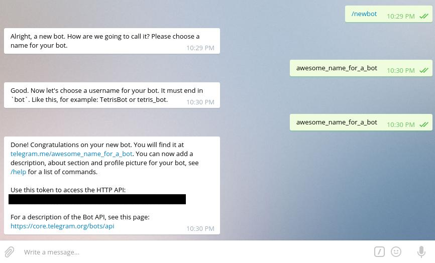
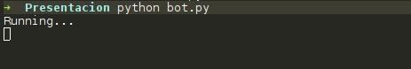
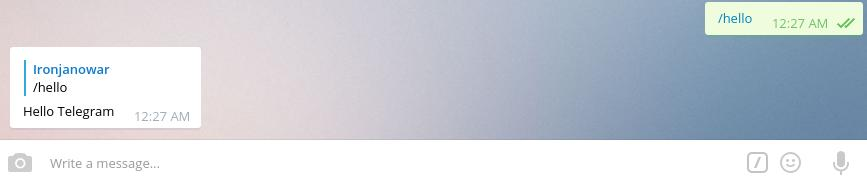
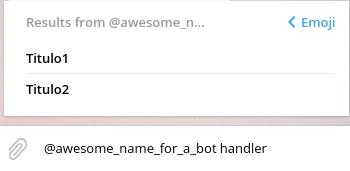
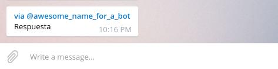
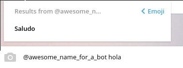
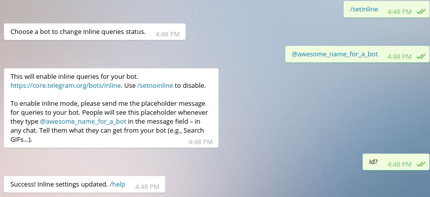

Telegram Bots
@CesharPaste
Created: 2016-12-03 sáb 00:08
Dafuq is a Telegram bot?
"Bots are simply Telegram accounts operated by software, not people"
Como funciona?
Que necesitas?
- Python 3
- pip 3
- Un token de un bot
Token?
Yep, un TOKEN!
El cual nunca deberéis compartir ni subir a GitHub…
El TOKEN nos lo dará @BotFather
Empecemos!
Instalar con vuestro gestor de paquetes:
- python
- python-pip
Python 3 please!
Instalar la API
A mano:
$ git clone https://github.com/eternnoir/pyTelegramBotAPI.git
$ cd pyTelegramBotApi
$ python3 setup.py install
Ahora a por el TOKEN

Ya esta todo listo! Ahora a programar
- Crear la carpeta donde vamos a hacer nuestro proyecto
$ mkdir MyBot
$ cd MyBot
- El archivo en el cual escribiremos nuestro código
$ touch bot.py
Perooo… Que escribo?
- Lo primerísimo de todo, importar la librería
import telebot
- Y crear el objeto bot con nuestro precioso token
bot = telebot.TeleBot("TOKEN")
Handlers
- Un handler es lo que va a permitir a tu bot saber cuándo le estás hablando
@bot.message_handler(commands=['patata'])
def patata(message):
# Lo que haga patata
Ejemplo
@bot.message_handler(commands=['hello'])
def hello(message):
bot.reply_to(message, "Hello Telegram")
La función reply_ to contesta al objeto message
Well done
Ahora falta el long polling, que básicamente es que el bot le pregunte al servidor si hay algo para él (Muy muy resumidamente)
Para ello haremos lo siguiente:
bot.polling()
TIP
Al ejecutar nuestro bot puede dar la sensación de que se ha quedado colgado
Para sacarnos de dudas podemos poner un print cuando hagamos el polling
Tal que así:
print("Running...")
bot.polling()
Ejemplo completo
import telebot
bot = telebot.TeleBot("9823982:aeoEOHtejhonHJeojhoEUoEUotaToIPC")
@bot.message_handler(commands=['hello'])
def hello(message):
bot.reply_to(message, "Hello Telegram")
print("Running...")
bot.polling()
TIP 2
Documentar vuestro código, es de muuuuuuuuucha ayuda
import telebot
# Creamos el bot
bot = telebot.TeleBot("9823982:aeoEOHtejhonHJeojhoEUoEUotaToIPC")
# Handlers
@bot.message_handler(commands=['hello'])
def hello(message):
# Envia un mensaje al recibir /hello
bot.reply_to(message, "Hello Telegram")
# Iniciamos el polling
print("Running...")
bot.polling()
Ahora a probarlo!
En una terminal vamos al directorio del bot y escribimos:
$ python bot.py
El resultado es el siguiente:

Nuestro bot ya está funcionando!

Predicción de comandos en BotFather
Esto se hace desde Telegram!
Funciones que puede hacer el bot
- reply_ to
- Contesta a un mensaje
- send_ message
- Envía un mensaje al chat que le indiquemos
- send_ photo
- Envía una foto al chat que le indiquemos
- send_ audio
- Envía un audio al chat que le indiquemos
Y muchas más…
Inline bots
Peroo… HAY MÁS!?
Of course!
@gif es un bot inline.
Puedes "hablar" con el desde cualquier chat aunque no esté en él.

Como lo iso!!
Con inline handler
Inline Handler
@bot.inline_handler(lambda query: ... )
def inline_function(query):
# Inline function
OMG lambda functions
No es para tanto
Lambda functions en Python
Es una función anónima que nos permite hacer lo siguiente.
>>> g = lambda x: x**2
>>> g(3)
9
En vez de esto:
>>> def al_cuadrado(x):
... return x**2
>>> al_cuadrado(3)
9
Ventajas
Lo que nos interesa
Usarla como trigger para nuestras funciones
@bot.inline_handler(lambda query: condición )
def inline_function(inline_query):
# Inline function
En este caso si escriben @awesome_ name_ for_ a_ bot hola:
@bot.inline_handler(lambda query: query.query == "hola")
def inline_function(inline_query):
# Inline function
Aunque también nos valen funciones normales, las lambda suelen ser más cómodas
Ahora cambia la cosa
resultado = types.InlineQueryResultArticle(ID, Titulo, AEnviar)
- ID
- Identificador del resultado
- Título
- Título de la función que va a hacer el bot
- A enviar
- Lo que enviará el bot al chat
Aquí se ve mejor


Le decimos al bot lo que tiene que enviar
bot.answer_inline_query(donde, [que])
- donde
- A donde lo enviamos
- que
- Qué enviamos
Ejemplo
bot.answer_inline_query(inline_query.id, [r])
Ejemplo completo
@bot.inline_handler(lambda query: query.query == "hola")
def hola(inline_query):
r = types.InlineQueryResultArticle('1', 'Saludo', types.InputTextMessageContent("Well hello!"))
bot.answer_inline_query(inline_query.id, [r])
Lo que nos sale para dar click

Lo que contesta el bot:

Ejemplo completo
import telebot
from telebot import types
# Creamos el bot
bot = telebot.TeleBot("201337136:AAHc5lIPPqAFqAcX6bNMTNV2pFTzlbzsJtI")
@bot.inline_handler(lambda query: query.query == "hola")
def hola(inline_query):
# Envia Well Hello
r = types.InlineQueryResultArticle('1', 'Saludo', types.InputTextMessageContent("Well hello!"))
bot.answer_inline_query(inline_query.id, [r])
# Iniciamos el bot
print("Running...")
bot.polling()
Permitir inline
Una vez más acudiremos a BotFather

De donde puedo aprender cosas?
La API está bastante bien documentada con los ejemplos
https://github.com/eternnoir/pyTelegramBotAPI/tree/master/examples
Ejemplos que encontréis por ahí
- El bot de ACM
https://github.com/acmfi/ACMbot/tree/dev
- Bots propios